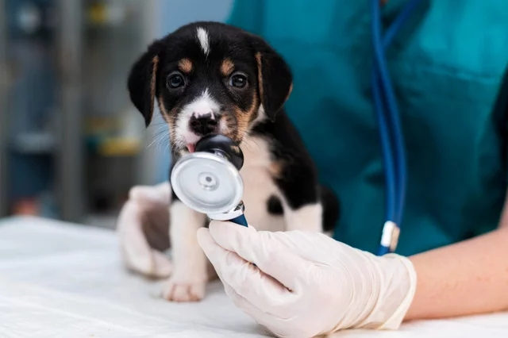

Clínica & PrevençãoConsulta Clínica Integrativa & Check-up
Uma avaliação minuciosa da saúde geral do pet em consultório com iluminação suave e técnicas de manejo gentil e livre de estresse. Foco em prevenção e nutrição.
Valor a partir de:
R$ 180,00
Solicitar Orçamento e Detalhes